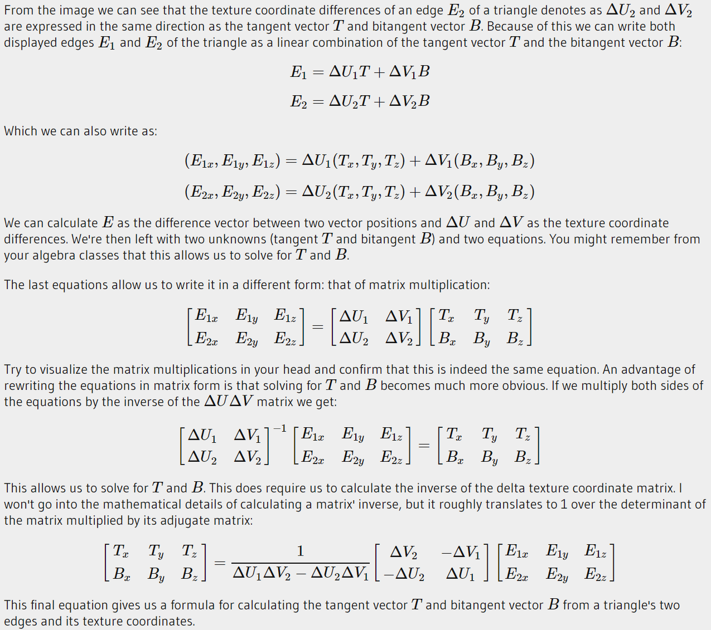

CS171-1 Assignment2: Rendering mesh with texture and normal mapping
Introduction
In this assignment, you are required to texture a mesh object with Phong lighting and perform normal mapping to change the surface details. To realize these functionalities, you will need to (and you have to) use vertex shader and fragment shader in your program.
In the following, we will give you the specifics about what you need to finish, as well as some related guidelines in order to assist your programming in this assignment.
Note
Before doing the assignment, please read the materials on OpenGL programming at LearnOpenGL. In this site you will learn how to build shaders, how to control your camera in shader and how to achieve texturing. You will also learn what is normal mapping and how to do normal mapping. Please also study what is VAO and VBO.
Programming Requirements
- [must] You are required to render a 3D object with Phong lighting model and Phong shading using OpenGL shaders and draw the model we give you in an OBJ file format.
- [must] You are required to texture the surface of the model with OpenGL shaders.
- [must] You are required to enable normal mapping for the model inside the OpenGL shaders.
Demonstration Requirements
In addition to programming, you will also need to submit a demonstration video.
Things must be included in the demonstration video:
- Explain how you render 3D objects with Phong lighting model and Phong shading in shaders and show related code fragments and demonstrate the result.
- Explain how you do texturing, show related code fragments and demonstrate the result.
- Explain how you add normal map to the model, show related code fragments and demonstrate the result.
Additional Notification:
- You should present your result with your voice included.
- You should only use Mandarin or English in your video.
- Your should try your best to present your ideas clearly.
- If you do not follow the above requirements, your score will be deduced by 10% of the entire assignment score.
Submission
You are required to submit following things through GitHub as shown in the tutorial video:
- project scripts and an executable program
- a PDF-formatted report which describes what you have done
- demonstration video which explains your implementation
Submission deadline: 22:00, April 9, 2020
Grading rules
- NO CHEATING! If found, your score for the assignment is zero. You are required to work INDEPENDENTLY. We fully understand that implementations could be similar somewhere, but they cannot be identical. To avoid being evaluated inappropriately, please show your understanding of your codes in your submitted video.
- Late submission of your assignment will subject to score deduction.
Skeleton Project/ Report Template
The skeleton program and report template will be provided once you accept the assignment link of GitHub classroom which we will publish in piazza. If you accept the assignment through the link properly, a repository which contains the skeleton project and report template will be created under your GitHub account. Please follow the template to prepare your report.
You should complete your assignment submission to your repository through GitHub before the deadline.
Tutorial Video
In the tutorial video, we will describe the following topics:
- Interpretation of assignment requirements
- Introduction on vertex shader and fragment shader
- Introduction on texture mapping
- Introduction on how to add normal map
Please have a check. Hope it can help you complete this assignment.
Implementation Guidance
1.Building Shaders
In the tutorial video, we will explain how to use vertex shader and fragment shader to render objects. Here is a brief introduction of these shaders.Please read the materials on OpenGL programming at LearnOpenGL.
Shaders are written in the C-like language.GLSL. GLSL is tailored for use in OpenGL and contains useful features specifically targeting vector and matrix manipulations.
Structure
A shader typically has the following structure:
xxxxxxxxxx#version version_numberin type in_variable_name;in type in_variable_name;out type out_variable_name; uniform type uniform_name; void main(){ // process input(s) and do some weird graphics stuff ... // output processed stuff to output variable out_variable_name = weird_stuff_we_processed;}Data Types
GLSL has, like any other programming language, data types for specifying what kind of variable we want to work with. GLSL has most of the built-in types we know from languages like C: int, float, double, uint and bool. GLSL also features two container types that we'll be using a lot, namely vectors and matrices.
Vectors
The vector datatype allows for some interesting and flexible component selection called swizzling. Swizzling allows us to use syntax like this:
xxxxxxxxxxvec2 someVec;vec4 differentVec = someVec.xyxx;vec3 anotherVec = differentVec.zyw;vec4 otherVec = someVec.xxxx + anotherVec.yxzy;Matrices
xxxxxxxxxxmat2mat3mat2x3mat3x4Sampler
GLSL has a built-in data-type for texture objects called a sampler that takes as a postfix the texture type we want e.g. sampler1D, sampler3D or in our case sampler2D. We can then add a texture to the fragment shader by simply declaring a uniform sampler2D that we later assign our texture to.
xxxxxxxxxx#version 330 core...uniform sampler2D texture1;uniform sampler2D texture2;void main(){ FragColor = mix(texture(texture1, TexCoord), texture(texture2, TexCoord), 0.2);}Structure
Like structure in C language.
xxxxxxxxxxstruct PointLight { vec3 position; float constant; float linear; float quadratic; vec3 ambient; vec3 diffuse; vec3 specular;};Ins and outs
Shaders are small programs on their own, but they are part of a whole and for that reason we want to have inputs and outputs on the individual shaders so that we can move stuff around. GLSL defines the 'in' and 'out' keywords specifically for that purpose. Each shader can specify inputs and outputs using those keywords and wherever an output variable matches with an input variable of the next shader stage they're passed along. The vertex and fragment shader differ a bit though.
The vertex shader should receive some form of input; otherwise it would be pretty ineffective. The vertex shader differs in its input, in that it receives its input straightforwardly from the vertex data. To define how the vertex data is organized, we specify the input variables with location metadata, so that we can configure the vertex attributes on the CPU. We've seen this in the previous tutorial as layout (location = 0). The vertex shader thus requires an extra layout specification for its inputs, so we can link it with the vertex data.
The other exception is that the fragment shader requires a vec4 color output variable, since the fragment shader needs to generate a final output color. If you fail to specify an output color in your fragment shader, the color buffer output for those fragments will be undefined (which usually means that OpenGL will render them either black or white).
So if we want to send data from one shader to the other, we'd have to declare an output in the sending shader, and a similar input in the receiving shader. When the types and the names are equal on both sides, OpenGL will link those variables together, and then it is possible to send data between shaders (this is done when linking a program object). To show how this works in practice, we're going to alter the shaders from the previous tutorial to let the vertex shader decide the color for the fragment shader.
Vertex shader
xxxxxxxxxx#version 330 corelayout (location = 0) in vec3 aPos; // the position variable has attribute position 0 out vec4 vertexColor; // specify a color output to the fragment shadervoid main(){ gl_Position = vec4(aPos, 1.0); // see how we directly give a vec3 to vec4's constructor vertexColor = vec4(0.5, 0.0, 0.0, 1.0); // set the output variable to a dark-red color}Fragment shader
xxxxxxxxxx#version 330 coreout vec4 FragColor; in vec4 vertexColor; // the input variable from the vertex shader (same name and same type) void main(){ FragColor = vertexColor;} Uniforms
Uniforms are another way to pass data from our application on the CPU to the shaders on the GPU. Uniforms are however slightly different compared to vertex attributes. First of all, uniforms are global. Global means that a uniform variable is unique per shader program object, and can be accessed from any shader at any stage in the shader program. Second, whatever you set the uniform values to, uniforms will keep their values until they're either reset or updated during the whole shader execution process.
To declare a uniform in GLSL, we simply add the uniform keyword to a shader with a type and a name. From that point on, we can use the newly declared uniform in the shader. Let's see if this time we can set the color of the triangle via a uniform:
xxxxxxxxxx#version 330 coreout vec4 FragColor; uniform vec4 ourColor; // we set this variable in the OpenGL code.void main(){ FragColor = ourColor;} We declared a uniform vec4 ourColor in the fragment shader and set the fragment's output color to the content of this uniform value. Since uniforms are global variables, we can define them in any shader stage, so there is no need to go through the vertex shader again to get something to the fragment shader. We're not using this uniform in the vertex shader, so we do not need to define it there. The uniform is currently empty, and we haven't added any data to the uniform yet, so let's try that. We first need to find the index/location of the uniform attribute in our shader. Once we have the index/location of the uniform, we can update its values. Instead of passing a single color to the fragment shader, let's spice things up by gradually changing color over time:
xxxxxxxxxxfloat timeValue = glfwGetTime();float greenValue = (sin(timeValue) / 2.0f) + 0.5f;int vertexColorLocation = glGetUniformLocation(shaderProgram, "ourColor");glUseProgram(shaderProgram);glUniform4f(vertexColorLocation, 0.0f, greenValue, 0.0f, 1.0f);First, we retrieve the running time in seconds via glfwGetTime(). Then we vary the color in the range of [0.0, 1.0] by using the 'sin' function and store the result in greenValue.
Then we query for the location of the ourColor uniform using glGetUniformLocation. We supply the shader program and the name of the uniform (that we want to retrieve the location from) to the query function. If glGetUniformLocation returns -1, it could not find the location. Lastly, we can set the uniform value using the glUniform4f function. Note that finding the uniform location does not require you to use the shader program first, but updating a uniform does require you to first use the program (by calling glUseProgram), because it sets the uniform on the currently active shader program.
Now that we know how to set the values of uniform variables, we can use them for rendering. If we want the color to gradually change, we want to update this uniform every frame; otherwise the triangle would maintain a single solid color if we only set it once. So we calculate the greenValue and update the uniform each render iteration:
xxxxxxxxxxwhile(!glfwWindowShouldClose(window)){ // input processInput(window); // render // clear the colorbuffer glClearColor(0.2f, 0.3f, 0.3f, 1.0f); glClear(GL_COLOR_BUFFER_BIT); // be sure to activate the shader glUseProgram(shaderProgram); // update the uniform color float timeValue = glfwGetTime(); float greenValue = sin(timeValue) / 2.0f + 0.5f; int vertexColorLocation = glGetUniformLocation(shaderProgram, "ourColor"); glUniform4f(vertexColorLocation, 0.0f, greenValue, 0.0f, 1.0f); // now render the triangle glBindVertexArray(VAO); glDrawArrays(GL_TRIANGLES, 0, 3); // swap buffers and poll IO events glfwSwapBuffers(window); glfwPollEvents();}The code is a relatively straightforward adaptation of the previous code. This time, we update a uniform value each frame before drawing the triangle. If you update the uniform correctly, you should see that the color of your triangle gradually changes from green to black and back to green.
We have seen in the previous tutorial how we can fill a VBO, configure vertex attribute pointers and store it all in a VAO. This time, we also want to add color data to the vertex data. We're going to add color data as 3 floats to the vertex array. We assign a red, green and blue color to each of the corners of our triangle respectively:
xxxxxxxxxxfloat vertices[] = { // positions // colors 0.5f, -0.5f, 0.0f, 1.0f, 0.0f, 0.0f, // bottom right -0.5f, -0.5f, 0.0f, 0.0f, 1.0f, 0.0f, // bottom left 0.0f, 0.5f, 0.0f, 0.0f, 0.0f, 1.0f // top }; Since we now have more data to send to the vertex shader, it is necessary to adjust the vertex shader to also receive our color value as a vertex attribute input. Note that we set the location of the aColor attribute to 1 with the layout specifier:
xxxxxxxxxx#version 330 corelayout (location = 0) in vec3 aPos; // the position variable has attribute position 0layout (location = 1) in vec3 aColor; // the color variable has attribute position 1 out vec3 ourColor; // output a color to the fragment shadervoid main(){ gl_Position = vec4(aPos, 1.0); ourColor = aColor; // set ourColor to the input color we got from the vertex data} Since we no longer use a uniform for the fragment/pixel's color, but now use the ourColor output variable, we'll have to change the fragment shader as well:
xxxxxxxxxx#version 330 coreout vec4 FragColor; in vec3 ourColor; void main(){ FragColor = vec4(ourColor, 1.0);}Knowing the current layout, we can update the vertex format with glVertexAttribPointer:
xxxxxxxxxx// position attributeglVertexAttribPointer(0, 3, GL_FLOAT, GL_FALSE, 6 * sizeof(float), (void*)0);glEnableVertexAttribArray(0);// color attributeglVertexAttribPointer(1, 3, GL_FLOAT, GL_FALSE, 6 * sizeof(float), (void*)(3* sizeof(float)));glEnableVertexAttribArray(1);The first few arguments of glVertexAttribPointer are relatively straightforward. This time we are configuring the vertex attribute on attribute location 1. The color values have a size of 3 floats and we do not normalize the values.
Since we now have two vertex attributes, we have to re-calculate the stride value. To get the next attribute value (e.g. the next x-component of the position vector) in the data array, we have to move 6 floats to the right, three for the position values and three for the color values. This gives us a stride value of 6 times the size of a float in bytes (= 24 bytes). Also, this time we have to specify an offset. For each vertex, the position vertex attribute is located first, so we declare an offset of 0. The color attribute starts after the position data, so the offset is 3 * sizeof(float) in bytes (= 12 bytes).
Running the application should result in a colorful triangle.

2.Textures
Here is a brief introduction of textures in OpenGL. Please read the materials on OpenGL programming at LearnOpenGL.
In order to map a texture to the triangle, we need to tell each vertex of the triangle which part of the texture it corresponds to. Each vertex should thus have a texture coordinate associated with them that specifies what part of the texture image to sample from. Fragment interpolation then does the rest for the other fragments.
Texture coordinates range from 0 to 1 in the x and y axis (remember that we use 2D texture images). Retrieving the texture color using texture coordinates is called sampling. Texture coordinates start from (0,0) for the lower left corner of a texture image to (1,1) at the upper right corner of a texture image. The following image shows how we map texture coordinates to the triangle:

We specify 3 texture coordinate points for the triangle. We want the bottom-left side of the triangle to correspond to the bottom-left side of the texture, so we use the (0,0) texture coordinate for the triangle's bottom-left vertex. The same applies to the bottom-right side with a (1,0) texture coordinate. The top of the triangle should correspond to the top-center of the texture image, so we take (0.5,1.0) as its texture coordinate. We only have to pass 3 texture coordinates to the vertex shader, which then passes those to the fragment shader that neatly interpolates all the texture coordinates for each fragment.
Texture Wrapping
Texture coordinates usually range from (0,0) to (1,1), but what happens if we specify coordinates outside this range? The default behavior of OpenGL is to repeat the texture images (we basically ignore the integer part of the floating point texture coordinate), but there are more options OpenGL offers:
GL_REPEAT: The default behavior for textures. It repeats the texture image.
GL_MIRRORED_REPEAT: Same as GL_REPEAT, but mirrors the image.
GL_CLAMP_TO_EDGE: Clamps the coordinates between 0 and 1. The result is that coordinates outside the desired range are clamped to the boundary of the range, resulting in a stretched edge pattern.
GL_CLAMP_TO_BORDER: Coordinates outside the range are now given a user-specified border color.
Texture Filtering
Texture coordinates do not depend on resolution, but can be any floating point value; thus OpenGL has to figure out which texture pixel (also known as a texel ) to map the texture coordinate to. This becomes especially important if you have a very large object and a low resolution texture. You probably guessed by now that OpenGL has options for this texture filtering as well. There are several options available but for now we'll discuss the most important options: GL_NEAREST and GL_LINEAR. GL_NEAREST (also known as nearest neighbor or point filtering) is the default texture filtering method of OpenGL. When setting to GL_NEAREST, OpenGL selects the texel whose center is closest to the texture coordinate. GL_LINEAR (also known as bilinear filtering) takes an interpolated value from the texture coordinate's neighboring texels, approximating a color between the texels. The smaller the distance from the texture coordinate to a texel's center, the more that texel's color contributes to the sampled color.
Texture filtering can be set for magnifying and minifying operations (when scaling up and down), so you could, for example, use nearest neighbor filtering when textures are scaled down and linear filtering for scaling up textures. We thus have to specify the filtering method for both options via glTexParameter*. The code should look similar to setting the wrapping method:
xxxxxxxxxxglTexParameteri(GL_TEXTURE_2D, GL_TEXTURE_MIN_FILTER, GL_NEAREST);glTexParameteri(GL_TEXTURE_2D, GL_TEXTURE_MAG_FILTER, GL_LINEAR);Mipmaps
Imagine we have a large room with thousands of objects, each with an attached texture. There will be objects far away that have the same high resolution texture attached as the objects close to the viewer. Since the objects are far away and probably only produce a few fragments, OpenGL has difficulties retrieving the right color value for its fragment from the high resolution texture, since it has to pick a texture color for a fragment that spans a large part of the texture. This will produce visible artifacts on small objects, not to mention the waste of memory bandwidth using high resolution textures on small objects.
To solve this issue, OpenGL uses a concept called mipmaps that is basically a collection of texture images where each subsequent texture is twice as small compared to the previous one. The idea behind mipmaps is easy to understand: based on the distance from the viewer, OpenGL will use different mipmap textures that best suits the distance to the object. Because the object is far away, the smaller resolution will not be noticeable to the user. OpenGL is then able to sample the correct texels, and there's less cache memory involved when sampling that part of the mipmaps.
Creating a collection of mipmapped textures for each texture image is cumbersome to do manually, but luckily OpenGL is able to do all the work for us with a single call to glGenerateMipmaps after we've created a texture. Later in the texture tutorial, you'll see the use of this function.
When using between mipmaps during rendering, OpenGL might show some artifacts like sharp edges visible between the two mipmap layers. Just like normal texture filtering, it is also possible to filter between mipmap levels using NEAREST and LINEAR filtering for interpolating texels. To specify the filtering method for mipmaps, we can replace the original filtering methods with one of the following four options:
GL_NEAREST_MIPMAP_NEAREST: takes the nearest mipmap to match the pixel size and uses nearest neighbor interpolation for texture sampling.
GL_LINEAR_MIPMAP_NEAREST: takes the nearest mipmap level and samples that level using linear interpolation.
GL_NEAREST_MIPMAP_LINEAR: linearly interpolates between the two mipmaps that most closely match the size of a pixel and samples the interpolated level via nearest neighbor interpolation.
GL_LINEAR_MIPMAP_LINEAR: linearly interpolates between the two closest mipmaps and samples the interpolated level via linear interpolation.
Loading and creating textures
The first thing we need to do to actually use textures is to load them into our application. Texture images can be stored in dozens of file formats, each with their own structure and ordering of data, so how do we get those images in our application? One solution would be to choose a file format we'd like to use, say .PNG and write our own image loader to convert the image format into a large array of bytes. While it's not very hard to write your own image loader, it's still cumbersome and what if you want to support more file formats? You'd then have to write an image loader for each format you want to support.
Another solution, and probably a good one, is to use an image-loading library that supports several popular formats and does all the hard work for us. A library like stb_image.h.
xxxxxxxxxxint width, height, nrChannels;unsigned char *data = stbi_load("container.jpg", &width, &height, &nrChannels, 0);Generating a texture
Like any of the previous objects in OpenGL, textures are referenced with an ID; let's create one:
xxxxxxxxxxunsigned int texture;glGenTextures(1, &texture); The glGenTextures function first takes as input how many textures we want to generate and store them in an unsigned int array given as its second argument (in our case just a single unsigned int). Just like other objects, we need to bind it so that any subsequent texture commands will configure the currently bound texture:
xxxxxxxxxxglBindTexture(GL_TEXTURE_2D, texture); Now that the texture is bound, we can start generating a texture using the previously loaded image data. Textures are generated with glTexImage2D:
xxxxxxxxxxglTexImage2D(GL_TEXTURE_2D, 0, GL_RGB, width, height, 0, GL_RGB, GL_UNSIGNED_BYTE, data);glGenerateMipmap(GL_TEXTURE_2D);This is a large function with quite a few parameters so we'll walk through them step-by-step:
The first argument specifies the texture target; setting this to GL_TEXTURE_2D means this operation will generate a texture on the currently bound texture object at the same target (so any textures bound to targets GL_TEXTURE_1D or GL_TEXTURE_3D will not be affected). The second argument specifies the mipmap level for which we want to create a texture for if you want to set each mipmap level manually, but we'll leave it at the base level which is 0. The third argument tells OpenGL in what kind of format we want to store the texture. Our image has only RGB values so we'll store the texture with RGB values as well. The 4th and 5th argument sets the width and height of the resulting texture. We stored those earlier when loading the image so we'll use the corresponding variables. The next argument should always be 0 (some legacy stuff). The 7th and 8th argument specify the format and data type of the source image. We loaded the image with RGB values and stored them as chars (bytes) so we'll pass in the corresponding values. The last argument is the actual image data.
Once glTexImage2D is called, the currently bound texture object now has the texture image attached to it. However, currently it only has the base-level of the texture image loaded and if we want to use mipmaps we have to specify all the different images manually (by continually incrementing the second argument) or, we could call glGenerateMipmap after generating the texture. This will automatically generate all the required mipmaps for the currently bound texture.
After we're done generating the texture and its corresponding mipmaps, it is good practice to free the image memory:
xxxxxxxxxxstbi_image_free(data);The whole process of generating a texture thus looks something like this:
xxxxxxxxxxunsigned int texture;glGenTextures(1, &texture);glBindTexture(GL_TEXTURE_2D, texture);// set the texture wrapping/filtering options (on the currently bound texture object)glTexParameteri(GL_TEXTURE_2D, GL_TEXTURE_WRAP_S, GL_REPEAT); glTexParameteri(GL_TEXTURE_2D, GL_TEXTURE_WRAP_T, GL_REPEAT);glTexParameteri(GL_TEXTURE_2D, GL_TEXTURE_MIN_FILTER, GL_LINEAR);glTexParameteri(GL_TEXTURE_2D, GL_TEXTURE_MAG_FILTER, GL_LINEAR);// load and generate the textureint width, height, nrChannels;unsigned char *data = stbi_load("container.jpg", &width, &height, &nrChannels, 0);if (data){ glTexImage2D(GL_TEXTURE_2D, 0, GL_RGB, width, height, 0, GL_RGB, GL_UNSIGNED_BYTE, data); glGenerateMipmap(GL_TEXTURE_2D);}else{ std::cout << "Failed to load texture" << std::endl;}stbi_image_free(data);Applying textures
For the upcoming sections, we will use a rectangle shape drawn with glDrawElements. We need to inform OpenGL how to sample the texture so we'll have to update the vertex data with the texture coordinates:
xxxxxxxxxxfloat vertices[] = { // positions // colors // texture coords 0.5f, 0.5f, 0.0f, 1.0f, 0.0f, 0.0f, 1.0f, 1.0f, // top right 0.5f, -0.5f, 0.0f, 0.0f, 1.0f, 0.0f, 1.0f, 0.0f, // bottom right -0.5f, -0.5f, 0.0f, 0.0f, 0.0f, 1.0f, 0.0f, 0.0f, // bottom left -0.5f, 0.5f, 0.0f, 1.0f, 1.0f, 0.0f, 0.0f, 1.0f // top left };glVertexAttribPointer(2, 2, GL_FLOAT, GL_FALSE, 8 * sizeof(float), (void*)(6 * sizeof(float)));glEnableVertexAttribArray(2);Note that we have to adjust the stride parameter of the previous two vertex attributes to 8 * sizeof(float) as well.
Next we need to alter the vertex shader to accept the texture coordinates as a vertex attribute and then forward the coordinates to the fragment shader:
xxxxxxxxxx#version 330 corelayout (location = 0) in vec3 aPos;layout (location = 1) in vec3 aColor;layout (location = 2) in vec2 aTexCoord;out vec3 ourColor;out vec2 TexCoord;void main(){ gl_Position = vec4(aPos, 1.0); ourColor = aColor; TexCoord = aTexCoord;}The fragment shader should then accept the TexCoord output variable as an input variable.
The fragment shader should also have access to the texture object, but how do we pass the texture object to the fragment shader? GLSL has a built-in data-type for texture objects called a sampler that takes as a postfix the texture type we want e.g. sampler1D, sampler3D or in our case sampler2D. We can then add a texture to the fragment shader by simply declaring a uniform sampler2D that we later assign our texture to.
xxxxxxxxxx#version 330 coreout vec4 FragColor; in vec3 ourColor;in vec2 TexCoord;uniform sampler2D ourTexture;void main(){ FragColor = texture(ourTexture, TexCoord);}To sample the color of a texture, we use GLSL's built-in texture function that takes as its first argument a texture sampler and as its second argument the corresponding texture coordinates. The texture function then samples the corresponding color value using the texture parameters we set earlier. The output of this fragment shader is then the (filtered) color of the texture at the (interpolated) texture coordinate.
All that's left to do now is to bind the texture before calling glDrawElements, and it will then automatically assign the texture to the fragment shader's sampler:
xxxxxxxxxxglBindTexture(GL_TEXTURE_2D, texture);glBindVertexArray(VAO);glDrawElements(GL_TRIANGLES, 6, GL_UNSIGNED_INT, 0);If you did everything right you should see the following image:

Normal mapping is a technique used for faking the lighting of bumps and dents – an implementation of bump mapping. It is used to add details without using more polygons. You can learn more about it in Normal mapping
3.Tangent space (for Normal Mapping)
Normal vectors in a normal map are expressed in tangent space where normals always point roughly in the positive z direction. Tangent space is a space that's local to the surface of a triangle: the normals are relative to the local reference frame of the individual triangles. Think of it as the local space of the normal map's vectors; they're all defined pointing in the positive z direction regardless of the final transformed direction. Using a specific matrix we can then transform normal vectors from this local tangent space to world or view coordinates, orienting them along the final mapped surface's direction.
Let's say we have the incorrect normal mapped surface from the previous section looking in the positive y direction. The normal map is defined in tangent space, so one way to solve the problem is to calculate a matrix to transform normals from tangent space to a different space such that they're aligned with the surface's normal direction: the normal vectors are then all pointing roughly in the positive y direction. The great thing about tangent space is that we can calculate such a matrix for any type of surface so that we can properly align the tangent space's z direction to the surface's normal direction.
Such a matrix is called a TBN matrix where the letters depict a tangent, bitangent and normal vector. These are the vectors we need to construct this matrix. To construct such a change-of-basis matrix that transforms a tangent-space vector to a different coordinate space we need three perpendicular vectors that are aligned along the surface of a normal map: an up, right and forward vector; similar to what we did in the camera tutorial.
We already know the up vector which is the surface's normal vector. The right and forward vector are the tangent and bitangent vector respectively. The following image of a surface shows all three vectors on a surface:
 Calculating the tangent and bitangent vectors is not as straightforward as the normal vector. We can see from the image that the direction of the normal map's tangent and bitangent vector align with the direction in which we define a surface's texture coordinates. We'll use this fact to calculate tangent and bitangent vectors for each surface. Retrieving them does require a bit of math; take a look at the following image:
Calculating the tangent and bitangent vectors is not as straightforward as the normal vector. We can see from the image that the direction of the normal map's tangent and bitangent vector align with the direction in which we define a surface's texture coordinates. We'll use this fact to calculate tangent and bitangent vectors for each surface. Retrieving them does require a bit of math; take a look at the following image:


4.Generate normal map from images
This part is about how to generate a normal map from an image. You do not need to do that in this assignment, but you need to know how to do it.
The first step is to convert the image into a grayscale image.
gray = (r+b+g)/3
Use gradient to calculate preliminary normal map. Here we use a higher grayscale image to obtain a preliminary normal map. Since normal is a three-dimensional vector (x, y, z), we use the following method to calculate the normal vector at the point (i, k). We use the Sobel algorithm to calculate the gradient in the horizontal and numerical directions, that is:
dx = G(i-1,k-1) + 2 * G(i,k-1) + G(i+1,k-1) - G(i-1,k+1) - 2 * G(i,k+1) + G(i+1,k+1) dy = G(i-1,k-1) + 2 * G(i-1,k) + G(i-1,k+1) - G(i+1,k-1) - 2 * G(i+1,k) - G(i+1,k+1)
Now the normal value at point (i, k) is:
x = dy y = -dx z = strength Normal(i,k) = (x,y,z)
- Recalculate a reduced intermediate normal map for the downscaled image. Although a preliminary normal map can be obtained through the above steps, the normal map obtained in this way is not smooth enough. Therefore, we use a method commonly used in PS to correct the normal.
We downsample the original image, which is to reduce the input grayscale Image. For example, shrink to 50%. Then perform the processing in step 2 on this reduced grayscale Image to find a reduced normal map.
- Combine two normal maps to get the final normal map. Enlarge the reduced normal map back to its original size, and then average it with the preliminary normal map to get the final normal map.